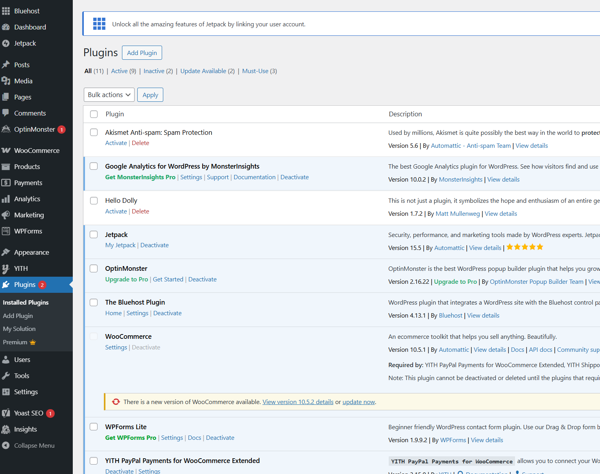
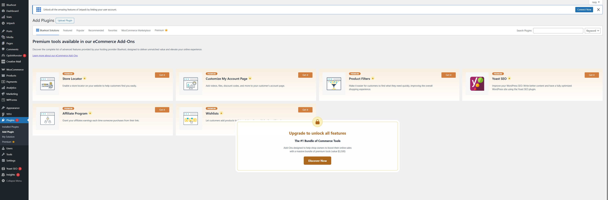
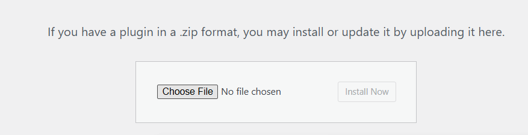
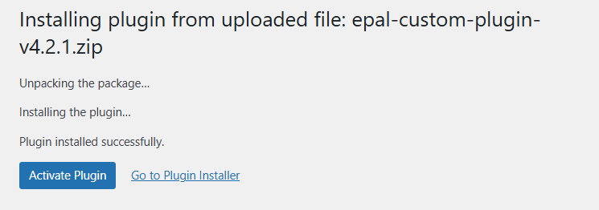
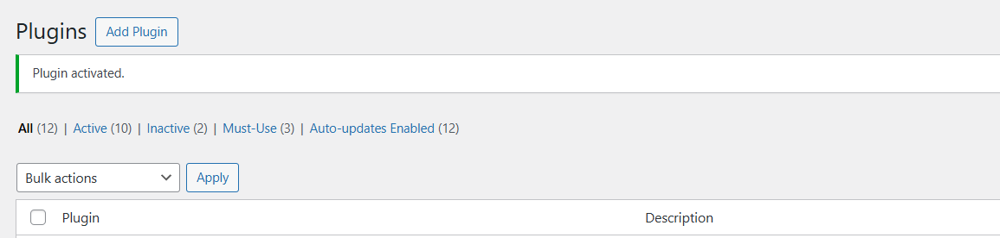
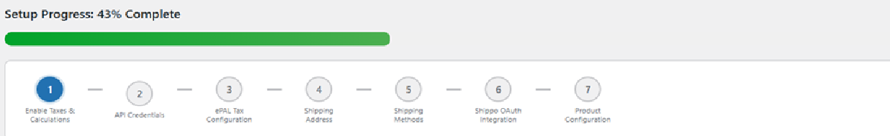

Uploading the ePAL Plugin
This topic explains how to retrieve and upload the plugin and start the guided installation.
Prerequisites
Review the information in the X topic.
Steps
Complete the following steps:
- You can get the plugin in the Woo Commerce store at the following Woo Commerce Store.
- Download the ZIP file and note the location where you save it.
- Open the Woo Commerce/Word Press Admin UI. Click
Plugins. The following UI is displayed:
Figure 1. Add Plugin UI 
- Click Add Plugin.
Figure 2. Upload Plugin 
- Click Upload Plugin. Choose the plugin file from the
location that you noted in step 2.
Figure 3. Choose File 
- Click Install Now. The installation UI is displayed.
The message Plugin installed successfully. is
displayed when the installation is complete.
Figure 4. Installation UI 
- If you click Activate Plugin, the following UI is
displayed to confirm the activation:
Figure 5. Activated Plugin 
- Click Start Setup Guide. The Setup UI is displayed.
You can use this UI to guide you through the steps for setting up the
plugin.

Next Step
Now, you can complete the installation as described in the Installing the ePAL Plugin topic.